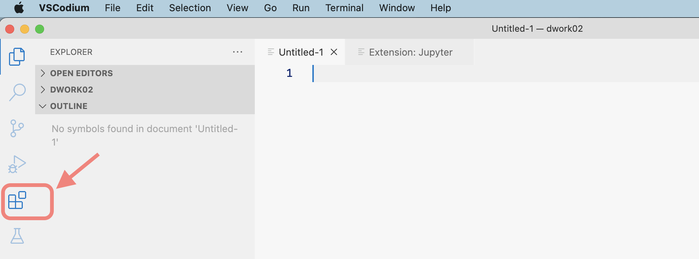
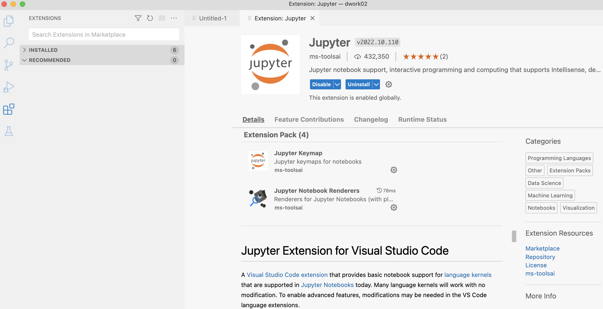
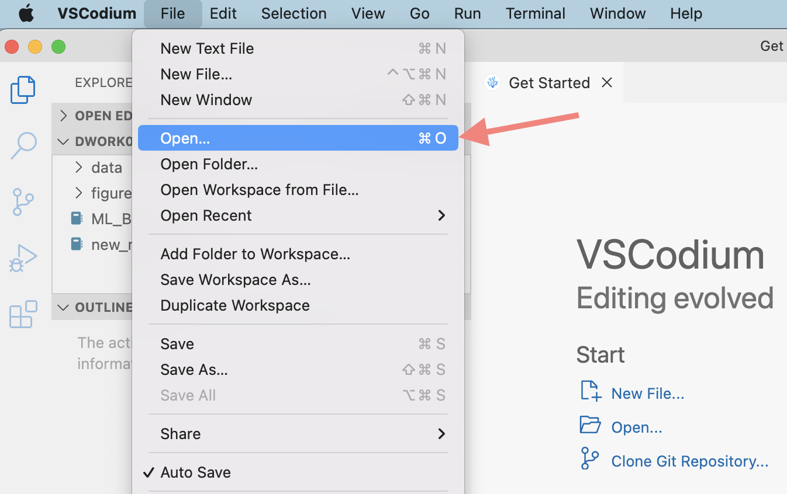
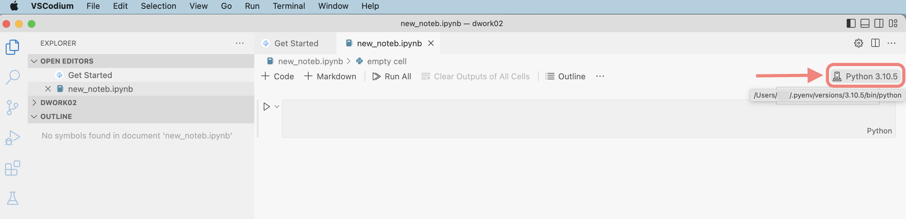
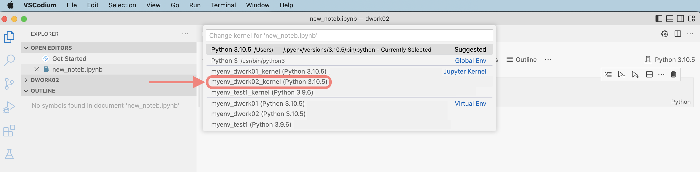
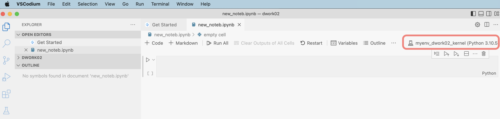

Summary
Working on data-science projects often requires to present, showcase and explain interactive source-code and data visualization within a single document. Jupyter Notebook is a tool providing exactly that. In the following lines I will briefly lead you through an exemplary setup that combines Jupyter Notebook running in a specified virtual environment with the fully open-source editor VSCodium (free alternative to VS Code). Following these lines should lead you to a productive setup where you can document your data-science projects in the form of a Jupyter Notebook, while editing its content via the extremely capable VSCodium editor.
Before you proceed, please ensure that both of the following conditions are met:
- Your computer has a version of Python 3 installed, and
- Your computer is prepared to initialize and run a virtual environment
If you need assistance or a refresher on these topics you can take a look here: Blog-Post-01.
I wrote this summary using macOS (version: 12.6), but you should be able to follow equivalent steps on Linux or Windows (you might need to make some modifications).
Overview
We’ll go through five main steps. The list below provides a high-level overview. Each of the five main steps will be explained in detail in the next section (see Details):
- Install and setup VSCodium (i.e. get and enable some extensions)
- Activate an existing virtual environment (with its underlying Python/pip version) which you want to use for running your Jupyter Notebook document. Then, within this activated virtual environment install two required packages:
- ipykernel
- jupyter
- Install any additional Python packages (within the same activated virtual environment) that you intend to use for your data science project and that must be available for your new Jupyter Notebook document (to be created at a later step)
- Create a new ipykernel that will serve as the basis for the upcoming Jupyter Notebook document
- Finally, just initialize a brand-new Jupyter Notebook document and open it with your VSCodium editor (after selecting the right kernel within the editor, you are ready to start using the document).
Details
1. Install and setup VSCodium
As a first step you should download and install (in case you don’t have it) the fully open-source editor VSCodium which is known as the free alternative for the popular VS Code editor of Microsoft. Please follow one of the following options:
In case you have followed the steps in my earlier post (Blog-Post-01), you will have homebrew already installed on your computer. If not, please consider to get homebrew: it is a very useful and straightforward package manager (for macOS/Linux).
Now, assuming your computer has homebrew installed, please open a terminal window (you can do this by opening macOS spotlight - or via your keyboard: just hit both keys command + space at once - then type “terminal” and open this application).
In your open terminal window enter and execute the following command to install the VSCodium editor:
brew install --cask vscodiumA list of the most recent VSCodium releases in various formats can be found here. Open this link and scroll down to the .dmg file section and download the appropriate file matching your computer’s architecture (note the respective suffix of the listed file names: .arm64. should used for newer Macs built on Apple Silicon, while .x64. for all Intel Macs).
After downloading the .dmg file, double-click the file to open it, and you'll see a Finder window. Simply drag the VSCodium icon into the Applications folder and you are done with the installation.
To prepare the editor for Jupyter Notebook we just need to install and enable the following extension: just navigate to the left vertical menu column of VSCodium and open the section called “Extensions” (keyboard shortcut: shift + command + X). You can see the arrow in the color highlighted screenshot below.

Within the extensions window of VSCodium you will see a search mask (top left corner): enter there the word “Jupyter” and search in the resulting list for the extension option called “Jupyter Extension for Visual Studio Code” that is published by ms-toolsai. Click on the installation button displayed next to it. After the installation you should see the updated status of this extension reflected by both buttons “disable” and “uninstall” - see the screenshot below:

2. Activate an existing virtual environment and install two fundamental Python packages
To manage virtual environments I am using the extremely useful tool virtualenvwrapper. In an earlier post I explained the use of virtual environments together with a detailed instruction of their setup and management (please see here).
Using the workon command from virtualenvwrapper without any additional expressions enlists all virtual environments that are currently available on your computer. In our exemplary case provides the terminal window provides the following output (listing three already created virtual environments):
myusername@mbp ~ % workon
myenv_dwork01
myenv_dwork02
myenv_test1To activate one specific virtual environment we just need to use the workon command from virtualenvwrapper together with the name of the virtual environment (for our example let’s choose myenv_dwork2):
myusername@mbp ~ % workon myenv_dwork02After having activated the selected virtual environment successfully you will note that the prompt of your terminal window has changed to this format: The activated virtual environment is explicitly stated within the round brackets:
(myenv_dwork02) myusername@mbp ~ %Now we can proceed with installing the two required packages in this virtual environment using the pip command. Please execute the following command in your terminal window (the feedback from the terminal will tell you when the installation was concluded):
pip install ipykernel jupyter3. Install any additional Python packages (within the same activated virtual environment)
Keeping the same virtual environment activated (in our example case: myenv_dwork02) we can proceed with installing those packages that we intend to use later for our data project (within the Jupyter Notebook document).
Let’s assume we know to use two very popular Python packages for data analysis (pandas) and data visualization (seaborn). We can install both packages by calling the following command (please add/modify the package names according to your needs) in your terminal window:
pip install -U pandas seabornOne additional detail: The flag -U/--upgrade with the pip install command used above means to upgrade the specified packages to their latest version.
4. Create a new ipykernel and give it a name
To create and name the new ipykernel run the Python command shown below in your terminal window. You should give the new ipykernel a name: in our example I will call it myenv_dwork02_kernel (to underline the connection of the kernel with the virtual environment). Feel free to choose a name that suits your preferences:
python -m ipykernel install --name=myenv_dwork02_kernel5. Create a new Jupyter Notebook document and open it with your VSCodium editor
We managed to reach the very last step of our setup. To that end we just need to create a fresh (empty) Jupyter Notebook document (having the file extension .ipynb) and open this file in our VSCodium editor.
Before creating the new .ipynb file we should decide where we want to create this file: it seems to be conveniant practice to establish a dedicated folder for a given data project. Therefore, I will create such a folder (to be named dwork02) within my home directory by executing the following lines in the terminal window:
mkdir ~/dwork02 By calling the touch command we will now create the .ipynb file (to be named new_noteb) in the project folder we have just created:
touch ~/dwork02/new_noteb.ipynbAfter having created the fresh Jupyter Notebook file we should open it now from within the VSCodium editor. To do so, start the VSCodium application, select from the main top-bar menu the section File and choose Open (see the screenshot below).

Browse to the location, where you just have created the new .ipynb file (in our example this is the dwork_02 directory) and open this file. Now, when the notebook opens up in your editor, click on the kernel picker located in the top right corner (see the arrow and marked highlight below):

After clicking the kernel picker you will see a list of possible kernels to choose from (see the screenshot with the marked highlights below). Following our example case we will select the kernel named myenv_dwork02_kernel (or whatever you have named your kernel before).

If you don’t see your previously created kernel in the kernel list, close VSCodium completely and re-open it. It should now appear in the refreshed list as shown above.
When you have your brand-new Jupyter Notebook document open in VSCodium and your selected kernel is running (as indicated by the kernel picker in the top right corner: please see the highlighted screenshot below) you have made it! Congratulations!

Happy coding & Cheers! 😃